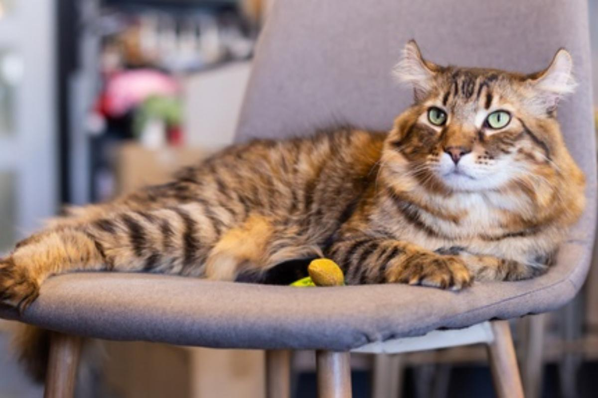
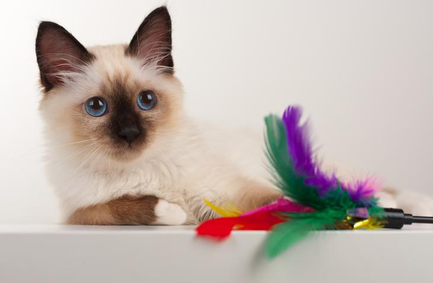
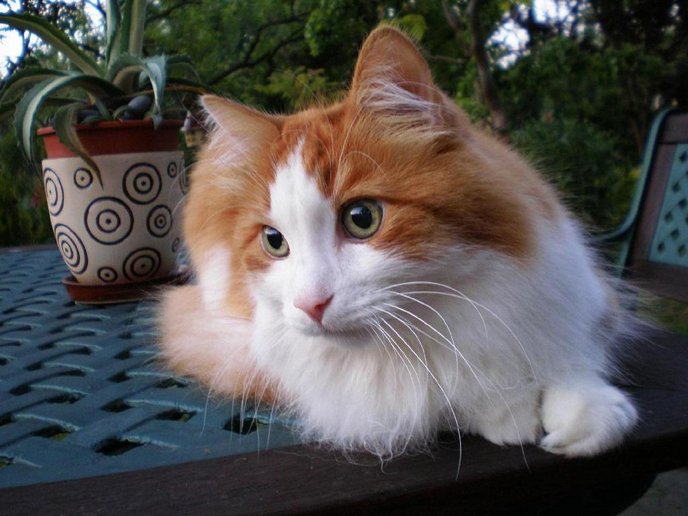
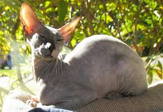

| Raza | Origen | Tamaño | Características | Tipo de pelo | Carácter | Esperanza de vida |
|---|---|---|---|---|---|---|
|

Highlander |
América | Mediano |
|
Largo o corto |
|
15 años |
|

Birmano |
Asia | Mediano |
|
Largo |
|
15 años |
|

Angora turco |
Asia, Europa, Turquía | Mediano |
|
Largo o medio |
|
18 años |
|

Peterbald |
Europa y Rusia | Mediano |
|
Sin pelo |
|
15 años |